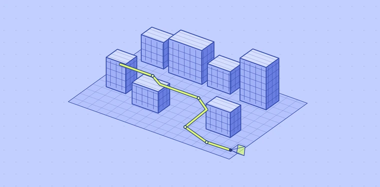

一帧图像怎样变成一个位姿
自动定容项目在图像里寻找瓶身、刻度和液面。换一个问题：假设相机绕着静止的瓶子运动，怎样从连续画面估计相机走过的路？这正是阅读视觉 SLAM 源码的一个切入点。
在 ORB-SLAM3 中，可以从 System::TrackMonocular 跟到 Tracking::GrabImageMonocular。地图初始化后，跟踪模块把当前画面上的特征与已有地图点联系起来。把地图点投到当前图像，预测像素与观测像素之间的差就是重投影误差。调整相机位姿，可以让多组可靠匹配同时对齐。
关键帧为什么值得留下
沿桌边移动时，两帧里同一个角点的位置会变化。有了足够的视差和正确匹配，就能用两个视角估计角点深度。单目相机若只在原地转动，两条观测射线的起点重合，仅凭它们无法三角化出深度。
ORB-SLAM3 把选出的关键帧交给局部建图线程。局部优化会一起调整邻近关键帧的位姿和地图点。再次看见已经建过图的地方时，回环线程还会检查两个地方是否满足几何关系，据此校正累计漂移。阅读源码时，可以沿 Tracking、LocalMapping、LoopClosing 三个入口分别跟踪。
用一个点检验轨迹方向
把 Tcw 读成“将世界坐标换算到相机坐标”。做一个纸上测试：相机坐标轴与世界对齐，相机中心沿世界 x 轴走到 1 米处。世界中位于 (3, 0, 2) 米的点，此时应落在相机坐标 (2, 0, 2) 米。于是 Tcw 的 x 平移是 −1 米。
要画出相机中心在世界中的轨迹，先求 Twc = Tcw⁻¹，再取平移。ORB-SLAM3 的 System.cc 在导出关键帧轨迹时同样会取逆位姿。接入轨迹文件前先确认其导出约定，避免再求一次逆。上面的米制数字用于检验方向；纯单目重建的绝对尺度还需要外部度量约束。
把轨迹接入三维重建前，再查一帧
重建工具也可能采用世界到相机的约定。以 COLMAP 为例，若位姿写作 R 和 t，相机中心在世界系中的位置就是 −Rᵀt。可以挑一帧有匹配记录的图像，取出它实际观测到的三维点，先变换到相机系，统计深度为正的比例。许多观测点跑到相机后方时，就值得回查变换方向和轴定义。
再把正深度的点按实际相机模型投到图像平面，与记录的二维关键点比较。把误差中位数和第 95 百分位数放到一起看：前者反映典型匹配，后者能帮助找到局部偏差较大的帧。沿轨迹找到这些帧，再逐帧看原图，会比只看一条平滑曲线更有依据。